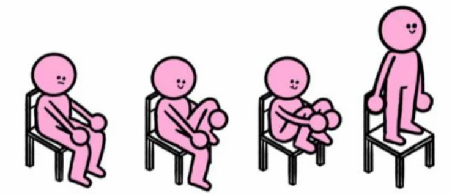
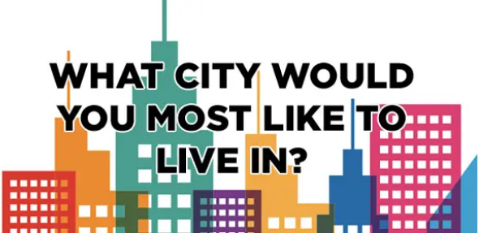
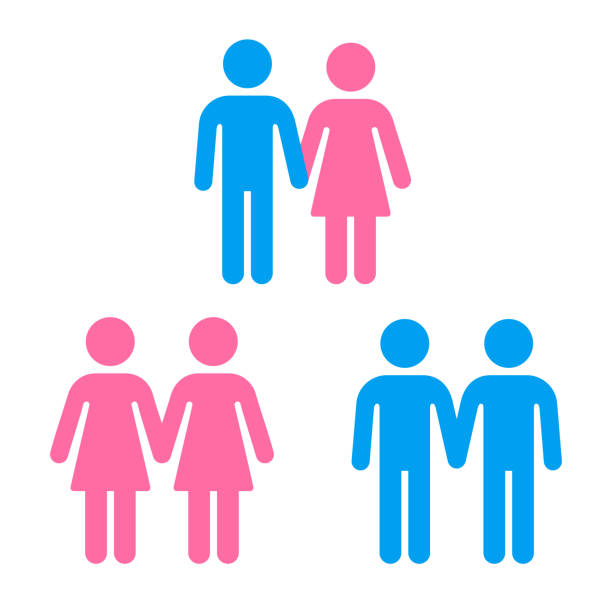

QUIZ
Community · Updated on Apr 25, 2025
Final Product: Community Tool or Quiz
Am I... Gay? Take This Quiz To Find Out!
Disney Channel is gay, Nickelodeon is straight, and Cartoon Network is bi. What went wrong?
Advanced CC Project 4
This quiz was designed for individuals who have questioned their gender identity or sexual orientation.
Inspired by BuzzFeed.com and expiriences from the 2010's.
The following questions are designed to help determine your place.
Ensure all all questions are answered honestly for accurate results.
Some questions may address your preferences and personal life more directly than others.

The following questions are designed to help determine your place.
Ensure all all questions are answered honestly for accurate results.
Some questions may address your preferences and personal life more directly than others.
Advanced CC Project 4
1. What is your favorite fruit?
2. How do you sit in a chair?

3. Where would you like to live?

3. What would you like to be?
